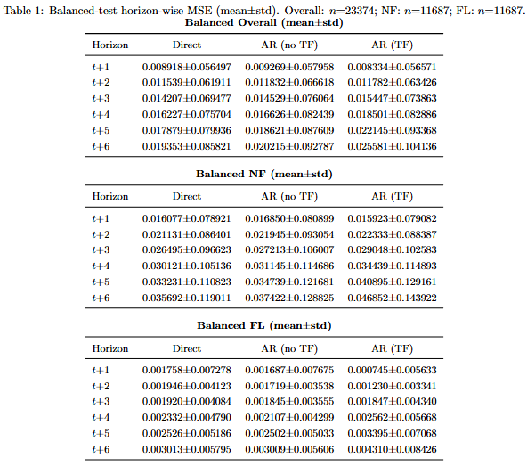
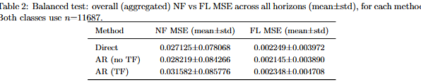
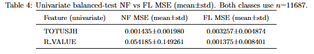
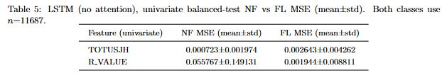
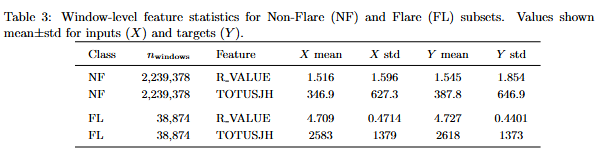
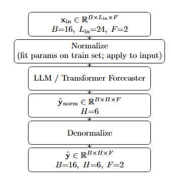
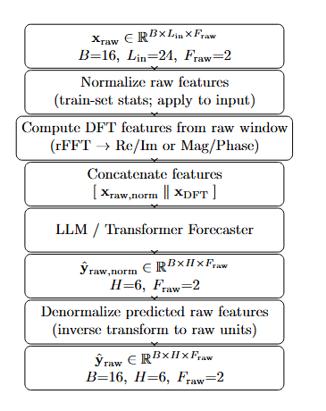
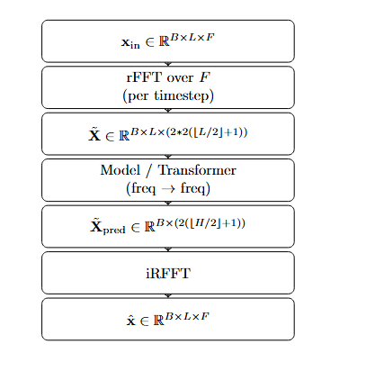
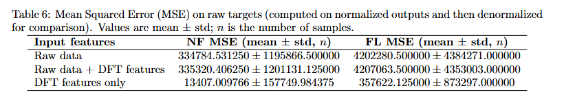

NF vs FL Time-Series Forecasting — Final Report
Comparing Non-Flare (NF) vs Flare (FL) forecasting behavior using an LLM-style Transformer model and an LSTM (no attention) sanity check.
1) Hyperparameters & Data Setup
| Parameter | Value |
|---|---|
| features | ("R_VALUE", "TOTUSJH") |
| input_len | 24 |
| horizon | 6 |
| batch_size | 16 |
| train_frac | 0.7 |
| num_workers | 8 |
| pin_memory | False |
Model used (primary): LLM-style Transformer
Sanity check: LSTM with no attention
Sanity check: LSTM with no attention
Forecasting Modes: Direct vs Autoregressive (Teacher Forcing / No Teacher Forcing)
-
Direct multi-step (one-shot): the model predicts the entire horizon in a single forward pass.
Train/infer: \(\hat{\mathbf{y}}_{1:H} = f(\mathbf{x}_{1:L})\).
No recursive feedback loop; errors do not accumulate across steps during inference. -
Autoregressive (no teacher forcing): the model predicts one step at a time and feeds its own previous
prediction back as input for the next step.
Inference loop: \(\hat{\mathbf{y}}_{1} = f(\mathbf{x}_{1:L})\), then \(\hat{\mathbf{y}}_{t} = f(\mathbf{x}_{2:L}, \hat{\mathbf{y}}_{1:t-1})\) for \(t=2..H\).
This is closer to real deployment but can suffer from error accumulation (early mistakes propagate). -
Autoregressive (teacher forcing): during training, the model still predicts one step at a time, but
it is fed the ground-truth previous step instead of its own prediction.
Training loop: \(\hat{\mathbf{y}}_{1} = f(\mathbf{x}_{1:L})\), then \(\hat{\mathbf{y}}_{t} = f(\mathbf{x}_{2:L}, \mathbf{y}_{1:t-1})\) for \(t=2..H\).
Teacher forcing stabilizes training and improves short-horizon accuracy, but creates exposure bias: at inference time the model must condition on \(\hat{\mathbf{y}}\), not \(\mathbf{y}\).
Key difference: Teacher forcing changes only what is fed back during training (ground truth vs model output).
At inference, teacher forcing is not available; the autoregressive model must use its own predictions.
2) Forecasting Approaches (LLM/Transformer)
- Direct multi-step: predict all horizons (t+1 … t+6) in one pass.
- Autoregressive (no teacher forcing): predict one step; feed the predicted output back for the next step.
- Autoregressive (teacher forcing): during training, feed the ground-truth previous step back as input.
3) Results (LLM/Transformer)
3.1 Balanced Test — Horizon-wise Curves (Placeholder)

3.2 Balanced Test — Overall NF vs FL (Aggregated)
3.3 NF vs FL Gap Plot (Placeholder)

4) Why is FL MSE lower than NF?
4.1 Hypothesis: One feature dominates the NF vs FL gap (Univariate tests)

4.2 Hypothesis: Attention/LLM learns spikes better → lower FL MSE

5) Underlying Data Distribution (Most Likely Explanation)

Main takeaway: NF is a more heterogeneous / noisy regime than FL (higher variability).
This narrows the conditional distribution for FL, making it easier to forecast (lower MSE), independent of attention.
6) Frequency-Domain Variant (DFT Features)
Setup (this section): We compute rFFT-based DFT features from the past window and use them as model inputs
(optionally concatenated with normalized raw inputs). The model predicts raw targets of shape
(B, H, F_raw),
which are then denormalized back to original units.
Example shapes used here:
B=16, L_in=24, H=6, F_raw=2,
N_bins(in)=L_in//2+1=13, N_bins(out)=H//2+1=4.
6.1 rFFT / iRFFT Formulas
\[
X[k] = \sum_{n=0}^{N-1} x[n]\; e^{-j 2\pi kn/N}, \quad k=0,\dots,N-1
\]
For real-valued \(x[n]\), we typically use rFFT and keep only \(k=0,\dots,\lfloor N/2 \rfloor\).
Each coefficient \(X[k]\) is complex and stored as \((\Re(X[k]), \Im(X[k]))\).
\[
x[n] = \frac{1}{N}\sum_{k=0}^{N-1} X[k]\; e^{j 2\pi kn/N}, \quad n=0,\dots,N-1
\]
In practice, iRFFT reconstructs the real time-series using conjugate symmetry implied by real-valued inputs.
6.2 Block Diagram
Block Diagram Placeholder (DFT Pipeline)




6.3 Pipeline Summary (Shapes)
- Raw past window:
x_past ∈ R^{B×L_in×F_raw}=(16,24,2) - rFFT bins (input):
N_bins(in) = L_in//2 + 1 = 13 - DFT feature width (Re/Im):
dft_dim = 2 × F_raw × N_bins(in) = 2×2×13 = 52 - Model input (example):
(B, L_in, 52)if the DFT vector is repeated per time token (global spectrum per window) - Model output (raw, normalized):
ŷ_raw,norm ∈ R^{B×H×F_raw}=(16,6,2) - Denormalization: apply inverse normalization to recover
ŷ_rawin original units
Note on leakage: This is safe at test time as long as the DFT is computed strictly from the past window
(no targets / future samples used in feature construction or normalization).